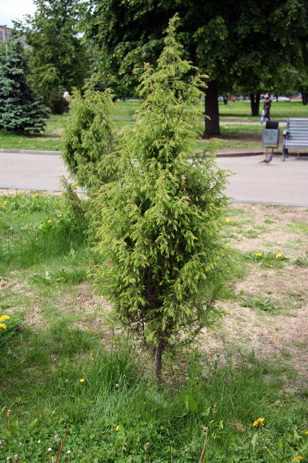

Можжевельник обыкновенный

Описание товара:
Можжевельник обыкновенный. Juniperus communis
Характеристики товара:
- Происхождение: Европа, Азия, Северная Америка
- Диаметр горшка: 9 см.
- Освещение: Может переносить затенение, но лучше развивается на открытых местах.
- Уход: К почвам нетребователен. Требуется обильный полив в жару и умеренный в остальное время года.
- Примечания: Очень зимостоек и не требует укрытия на зиму.